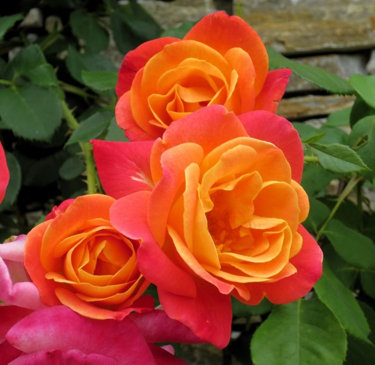

10. Joseph’s Coat Rose
If you are looking for a beautiful climbing rose for your garden, then Joseph’s coat can be the best choice for you. In fact, no other climbing roses are as colorful as Joseph’s coat rose. It produces medium blossoms of orange-red shaded with golden color. It grows well on fences and arbors in your garden.
This rose plant is disease free and reach up to 8-10 feet in height. You should plant is a location that provides full Sun. Watering is also important throughout the growing season. Joseph’s coat rose is a continual blooming plant. The brilliant multicolored flowers will appear repeatedly from spring through summer. The flowers are also light, fruity fragrance.
Additional Info
Class : Climber, floribunda. Flower type – Semi double. Flower color : Red, pink, orange, yellow and gold. Blooming season : Spring, summer. Caring : Watering is important, especially in the growing season. Fertilize the plant every two weeks.
Go To Home Page" Go To Previous Page